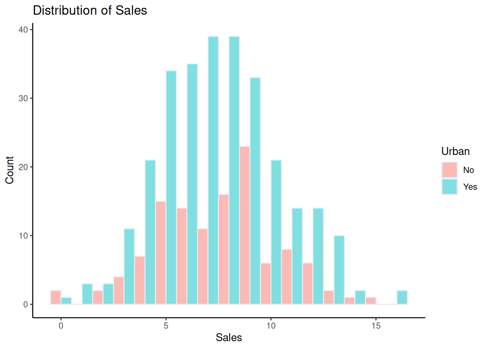

library(tidyverse)
library(dplyr)
library(ggplot2)
library(ggExtra)
library(hrbrthemes)
library(RColorBrewer) # for the color palette
library(GGally)
library(ISLR)
library(tree)
library(caret)
carseats <- ISLR::Carseats
ALVO <- 8 #definir se sera uma venda alta ou baixaLab1- Arvores
Lab 1
1-) Crie um documento Word e identifique-o com o nome do laboratório, data de elaboração e o seu nome ou da dupla que o elaborou
2-) Crie um tópico para cada resultado que você considerar relevante (manipulação de dados ou resultado de algum processamento) identificando-o com um título e uma breve explicação. Os resultados podem ser imagens de gráficos gerados ou de listas de valores ou dados de resultados obtidos. Não devem ser incluídos os scripts ou instruções de processamento utilizados, inclua apenas os resultados que você considerar relevantes
3-) No final do relatório crie um último tópico denominado “Conclusões” e elabore comentários, sugestões e conclusões sobre o que você pode aprender com a elaboração deste laboratório.
Árvores de Classificação
Iniciando Ambiente e variáveis Globais
Exploração dos dados
Conhecendo os dados
A base de dados escolhida é a carseats do pacote ISRL
Um quadro de dados com 400 observações nas 11 variáveis a seguir.
Sales: Vendas unitárias (em milhares) em cada local
CompPric: Preço cobrado pelo concorrente em cada local
Income: Nível de renda da comunidade (em milhares de dólares)
Advertising - Orçamento de publicidade local para a empresa em cada local (em milhares de dólares)
Population: Tamanho da população na região (em milhares)
Price: Preço que a empresa cobra pelas cadeirinhas em cada local
ShelveLoc: Um fator com níveis Ruim, Bom e Médio que indica a qualidade da localização das estantes para as cadeirinhas em cada local
Age: Idade média da população local
Education: Nível de educação em cada local
Urban: Fator com níveis Não e Sim para indicar se a loja está localizada em área urbana ou rural
US: Um fator com níveis Não e Sim para indicar se a loja está nos EUA ou não
carseats |> head() Sales CompPrice Income Advertising Population Price ShelveLoc Age Education
1 9.50 138 73 11 276 120 Bad 42 17
2 11.22 111 48 16 260 83 Good 65 10
3 10.06 113 35 10 269 80 Medium 59 12
4 7.40 117 100 4 466 97 Medium 55 14
5 4.15 141 64 3 340 128 Bad 38 13
6 10.81 124 113 13 501 72 Bad 78 16
Urban US
1 Yes Yes
2 Yes Yes
3 Yes Yes
4 Yes Yes
5 Yes No
6 No Yescarseats |> str() # tipos dos dados'data.frame': 400 obs. of 11 variables:
$ Sales : num 9.5 11.22 10.06 7.4 4.15 ...
$ CompPrice : num 138 111 113 117 141 124 115 136 132 132 ...
$ Income : num 73 48 35 100 64 113 105 81 110 113 ...
$ Advertising: num 11 16 10 4 3 13 0 15 0 0 ...
$ Population : num 276 260 269 466 340 501 45 425 108 131 ...
$ Price : num 120 83 80 97 128 72 108 120 124 124 ...
$ ShelveLoc : Factor w/ 3 levels "Bad","Good","Medium": 1 2 3 3 1 1 3 2 3 3 ...
$ Age : num 42 65 59 55 38 78 71 67 76 76 ...
$ Education : num 17 10 12 14 13 16 15 10 10 17 ...
$ Urban : Factor w/ 2 levels "No","Yes": 2 2 2 2 2 1 2 2 1 1 ...
$ US : Factor w/ 2 levels "No","Yes": 2 2 2 2 1 2 1 2 1 2 ...carseats |> dim() # tamanho da tabela[1] 400 11carseats |> is.na() |> sum()[1] 0carseats |> summary() Sales CompPrice Income Advertising
Min. : 0.000 Min. : 77 Min. : 21.00 Min. : 0.000
1st Qu.: 5.390 1st Qu.:115 1st Qu.: 42.75 1st Qu.: 0.000
Median : 7.490 Median :125 Median : 69.00 Median : 5.000
Mean : 7.496 Mean :125 Mean : 68.66 Mean : 6.635
3rd Qu.: 9.320 3rd Qu.:135 3rd Qu.: 91.00 3rd Qu.:12.000
Max. :16.270 Max. :175 Max. :120.00 Max. :29.000
Population Price ShelveLoc Age Education
Min. : 10.0 Min. : 24.0 Bad : 96 Min. :25.00 Min. :10.0
1st Qu.:139.0 1st Qu.:100.0 Good : 85 1st Qu.:39.75 1st Qu.:12.0
Median :272.0 Median :117.0 Medium:219 Median :54.50 Median :14.0
Mean :264.8 Mean :115.8 Mean :53.32 Mean :13.9
3rd Qu.:398.5 3rd Qu.:131.0 3rd Qu.:66.00 3rd Qu.:16.0
Max. :509.0 Max. :191.0 Max. :80.00 Max. :18.0
Urban US
No :118 No :142
Yes:282 Yes:258
Criando a variavel alvo
carseats <- carseats |>
dplyr::mutate(High = as.factor(ifelse(Sales <= ALVO,"No","Yes")))Visualizações
carseats |>
ggplot(aes(x = Sales)) +
geom_histogram(binwidth = 1,color="#e9ecef",alpha = 0.5, fill = "darkgreen", position = 'identity') +
labs(x = "Sales", y = "Count", title = "Distribution of Sales") +
theme_classic()carseats |>
ggplot(aes(x = Sales,fill=US)) +
geom_histogram(binwidth = 1,color="#e9ecef",alpha = 0.5,position = 'dodge') +
labs(x = "Sales", y = "Count", title = "Distribution of Sales") +
theme_classic()carseats |>
ggplot(aes(x=US,y=Sales,fill=US)) +
geom_boxplot() +
geom_jitter(color="black", size=0.4, alpha=0.9) 
carseats |>
ggplot(aes(x = Sales,fill=Urban)) +
geom_histogram(binwidth = 1,color="#e9ecef",alpha = 0.5,position = 'dodge') +
labs(x = "Sales", y = "Count", title = "Distribution of Sales") +
theme_classic()
carseats |>
ggplot(aes(x=Urban,y=Sales,fill=Urban)) +
geom_boxplot() +
geom_jitter(color="black", size=0.4, alpha=0.9) carseats |>
ggplot(aes(x = Sales,fill=ShelveLoc)) +
geom_histogram(binwidth = 1,color="#e9ecef",alpha = 0.5,position = 'dodge') +
labs(x = "Sales", y = "Count", title = "Distribution of Sales") +
theme_classic()
carseats |>
ggplot(aes(x=ShelveLoc,y=Sales,fill=ShelveLoc)) +
geom_boxplot() for(col in c("ShelveLoc","US","Urban")){
print(carseats |>
ggplot(aes(!!sym(col))) + geom_bar(aes(fill = High),position = 'dodge'))
}
A Distribuição das vendas muda conforme a qualidade da localização nas estantes . Isso pode facilitar para o modelo distinguir a variavel alvo, e portanto essa seria uma boa variável.
Regiões Urbanas apresentam uma distribuição parecida com Regiões Rurais. Sem grande possibilidade de discriminação pelo modelo
As distribuições para a variável US são parecidas. Mediana das vendas é um pouco maior para vendas no Estados unidos
- Relações entre variáveis quantitativas
for(col in names(subset(carseats, select = -c(ShelveLoc,US,Urban,High,Sales)))){
p <- ggplot(carseats, aes(y=Sales, x=!!sym(col))) +
geom_point() +
theme(legend.position="none")
p1 <- ggMarginal(p, type="histogram", size=10,fill = "slateblue")
print(p1)
}Olhando para esses gráficos. Somente “Preço x Vendas” possui uma relação linear. Verificamos que as cadeiras possuem relação elástica em suas vendas , quanto maior o preço , menor a quantidade vendida
Não aparenta haver uma alta elasticidade cruzada da demanda. Um Aumento no preço do concorrente , não aumenta a venda das cadeirinhas.
A relação entre Vendas e idade média da população parece seguir uma tendência negativa (maior a ideade média , menor a quantidade vendida, o que parece fazer sentido pois Idosos geralmente não são responsáveis por bebês). Mas não é algo muito forte
carseats |>
ggplot( aes(x=Age, y=Sales)) +
geom_point() +
geom_smooth(method=lm , color="red", se=FALSE) +
theme_classic()`geom_smooth()` using formula = 'y ~ x'- Correlações
carseats_numeric <-subset(carseats, select = -c(ShelveLoc,US,Urban,High))
ggpairs(carseats_numeric, title="Correlograma") ggcorr(carseats_numeric, method = c("everything", "pearson"),label = TRUE) Variáveis explicativas possuem baixa correlação entre elas. Chamou atenção Preço x Preço dos concorrentes. Aparentemente tais variáveis apresentam uma relação linear, conforme a figura a seguir:
p <- ggplot(carseats, aes(y=Price, x=CompPrice)) +
geom_point() +
theme(legend.position="none")
p1 <- ggMarginal(p, type="histogram", size=10,fill = "slateblue")
print(p1)ggpairs(subset(carseats, select = -c(ShelveLoc,US,Urban,Sales)), ggplot2::aes(colour=High,alpha=0.5),upper = list(continuous = wrap("cor", size = 3)))`stat_bin()` using `bins = 30`. Pick better value with `binwidth`.
`stat_bin()` using `bins = 30`. Pick better value with `binwidth`.
`stat_bin()` using `bins = 30`. Pick better value with `binwidth`.
`stat_bin()` using `bins = 30`. Pick better value with `binwidth`.
`stat_bin()` using `bins = 30`. Pick better value with `binwidth`.
`stat_bin()` using `bins = 30`. Pick better value with `binwidth`.
`stat_bin()` using `bins = 30`. Pick better value with `binwidth`.ggpairs(subset(carseats, select = -c(ShelveLoc,US,Urban,Sales)), ggplot2::aes(colour=High,alpha=0.5),upper = list(continuous = wrap("cor", size = 3)), lower = "blank")As distribuições não mudam muito dentro de cada categoria
Modelagem
Separando entre treino e teste
Obs: não modelando os dados completos para evitar viéses (seleção de variáveis, data leakage,etc )
carseats_trainIndex <- createDataPartition(carseats$High, p = 0.75, list = FALSE)
training_carseats <- carseats[carseats_trainIndex, ] |>
dplyr::select(-Sales)
test_carseats <- carseats[-carseats_trainIndex, ]|>
dplyr::select(-Sales)
print("Train dimentions: ")[1] "Train dimentions: "dim(training_carseats)[1] 300 11print("Test dimentions: ")[1] "Test dimentions: "dim(test_carseats)[1] 100 11head(training_carseats) CompPrice Income Advertising Population Price ShelveLoc Age Education Urban
1 138 73 11 276 120 Bad 42 17 Yes
2 111 48 16 260 83 Good 65 10 Yes
3 113 35 10 269 80 Medium 59 12 Yes
4 117 100 4 466 97 Medium 55 14 Yes
5 141 64 3 340 128 Bad 38 13 Yes
6 124 113 13 501 72 Bad 78 16 No
US High
1 Yes Yes
2 Yes Yes
3 Yes Yes
4 Yes No
5 No No
6 Yes Yeshead(test_carseats) CompPrice Income Advertising Population Price ShelveLoc Age Education Urban
7 115 105 0 45 108 Medium 71 15 Yes
8 136 81 15 425 120 Good 67 10 Yes
10 132 113 0 131 124 Medium 76 17 No
12 117 94 4 503 94 Good 50 13 Yes
15 107 117 11 148 118 Good 52 18 Yes
21 125 90 2 367 131 Medium 35 18 Yes
US High
7 No No
8 Yes Yes
10 Yes No
12 Yes Yes
15 Yes Yes
21 Yes NoObtendo árvore
set.seed(42)
options(repr.plot.width=10, repr.plot.height=8) # set plot size
tree_carseats_train = tree(High ~ ., data= training_carseats)
plot(tree_carseats_train )
text(tree_carseats_train , pretty=0,cex=0.55)Olhando apenas pera esse split , temos que a variável mais importante para o modelodecidir se teremos uma venda alta ou não é a Qualidade da disposição do produto na prateleira.
Para o lado direito da árvore temos que para lojas fora dos Estados Unidos, mesmo em qualidades da prateleira média ou baixa, as vendas serão altas se o preço for menor do que o terceiro quartil (3rd Qu.:131.0 , olhando para o dataset completo nas primeiras etapas). É possível que nessas condições não seja possível a empresa repassar preços masi caros
Os recortes de idade quase sempre são para médias abaixo de 40
A Árvore parece não ter alta complexidade dado o seu tamanho e número de recortes (avaliação subjetiva). Provavlemente teremos que reduzir seu tamanho para melhorar a variância (como demonstraremos no tópico a seguir)
- Performance no treino
predict_train = predict(tree_carseats_train, training_carseats, type = "class")
conf_matrix_train <- confusionMatrix(data = predict_train, reference = training_carseats$High)
conf_matrix_trainConfusion Matrix and Statistics
Reference
Prediction No Yes
No 161 8
Yes 16 115
Accuracy : 0.92
95% CI : (0.8833, 0.9481)
No Information Rate : 0.59
P-Value [Acc > NIR] : <2e-16
Kappa : 0.8363
Mcnemar's Test P-Value : 0.153
Sensitivity : 0.9096
Specificity : 0.9350
Pos Pred Value : 0.9527
Neg Pred Value : 0.8779
Prevalence : 0.5900
Detection Rate : 0.5367
Detection Prevalence : 0.5633
Balanced Accuracy : 0.9223
'Positive' Class : No
- Performance no teste
predict_test <- predict(tree_carseats_train,test_carseats,type='class') #prevendo coms os o modelo do treino
conf_matrix_test <- caret::confusionMatrix(data = predict_test,reference = test_carseats$High)
conf_matrix_testConfusion Matrix and Statistics
Reference
Prediction No Yes
No 43 12
Yes 16 29
Accuracy : 0.72
95% CI : (0.6213, 0.8052)
No Information Rate : 0.59
P-Value [Acc > NIR] : 0.004806
Kappa : 0.4297
Mcnemar's Test P-Value : 0.570750
Sensitivity : 0.7288
Specificity : 0.7073
Pos Pred Value : 0.7818
Neg Pred Value : 0.6444
Prevalence : 0.5900
Detection Rate : 0.4300
Detection Prevalence : 0.5500
Balanced Accuracy : 0.7181
'Positive' Class : No
# checando o balanceamento dos dados
test_carseats |>
count(High) |>
mutate(prop= n/ sum(n)) High n prop
1 No 59 0.59
2 Yes 41 0.41Apesar de uma boa acurácia 76% (nos dados de a proporção erade 59%-41% par avendas baixas e altas, ou seja, foi melhor do que um chute aleatório), a árvore consegue prever melhor para casos em que não temos venda alta (de 59 acertou 47). Enquanto que para caso de ocorrência de venda alta, o modelo não performou muito bem (acertou 12 de 29). Pensando no ponto de vista de negócio, saber o que faz vender mais é melhor do que saber o que não faz vender. Esta está última característica passa a ser importante quando o custo de estocagem é alto. Faltam detalhes para saber o custo de uma venda perdida relativa ao ganho em uma venda
Vale ressaltar que o modelo não apresenta certa estabilidade entre treino e teste. O desempenho cai consideravlemnete na maioria das métricas. A acurácia , por exemplo, vai de 0.9167 para 0.76. Isso pode indicar um sobreajuste (overfitting) de nosso modelo, se tronou muito específico com os dados de treino, e incapaz de generalizar aos dados de teste.
Implementando Validação Cruzada (poda da árvore)
cv.carseats = cv.tree(tree_carseats_train, FUN = prune.misclass)
cv.carseats$size
[1] 24 23 21 20 17 12 7 5 4 3 2 1
$dev
[1] 82 82 81 76 77 79 80 84 86 88 109 128
$k
[1] -Inf 0.000000 0.500000 1.000000 1.666667 1.800000 3.000000
[8] 4.500000 5.000000 6.000000 16.000000 32.000000
$method
[1] "misclass"
attr(,"class")
[1] "prune" "tree.sequence"plot(cv.carseats)prune.carseats = prune.misclass(tree_carseats_train, best = 12)
plot(prune.carseats)
text(prune.carseats, pretty=0)